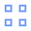

×
Уже есть ключ?
Ключ
Проверить
Отмена
Начать 3 дня бесплатно
Повторить подключение
Ввести ключ заново
Ключ не удалось сохранить. Он действует до закрытия приложения. Проверьте, что Связка ключей разблокирована и доступ разрешён.
Обновить
×
Настройки
Обход белых списков
ссылки на звонки, через них работает запасной путь

Режимы туннеля
Поддержка
помощь и журнал работы
Запускать при входе
туннель поднимется сам после входа в систему
Тариф «Базовый»
Белый режим, комнаты DION и личная поддержка — на Премиуме.
Повысить до Премиума
VK просит проверку
Проверка VK пока недоступна в версии для Linux.
Пока недоступно
Купить ключ
Поддержка
Нужна помощь?
Напишите нам удобным способом.
Telegram
Почта
Журнал
просмотреть и передать обезличенный отчёт
Журнал
Ключ, ссылки ВК, id устройства, внешние адреса, имена пользователя и компьютера скрыты.
…
Поделиться
Скопировать
Выбор программы
загружаю…
Обход белых списков
Транспорт Обхода Белых Списков
VK
DION
Ссылка на звонок
Добавить
▸ Как получить ссылки
Открыть VK и перейти в сообщения
— на телефоне или на vk.com
Нажать на трубку, затем на трубку с плюсом
Выбрать «Создать звонок», начать звонок от любого имени
Нажать «Поделиться ссылкой» и скопировать ссылку звонка. Звонок можно закрыть
Вставить ссылку на звонок в поле выше
Проверить все
Комнаты DION
Добавить и проверить
▸ Как получить ссылки
Нужна комната на dion.vc с включённым входом для гостей: без входа гостем она не подойдёт
Скопировать ссылку комнаты вида https://dion.vc/event/…
Вставить ссылку в поле выше — она появится в списке комнат DION
Режимы туннеля
Чёрный режим
Обход блокировок
YouTube, Discord и другое — без замедления провайдером
YouTube
Discord
Соцсети
Facebook, Threads, Messenger
Спидтесты и CDN
Speedtest, Cloudflare и другие сети доставки контента
Остальное
kino.pub, Linktree
Приложения в туннель
весь трафик выбранных программ — через Meridian, остальное напрямую
Выбрать из установленных
Указать .exe
Импорт из .txt
Экспорт в .txt